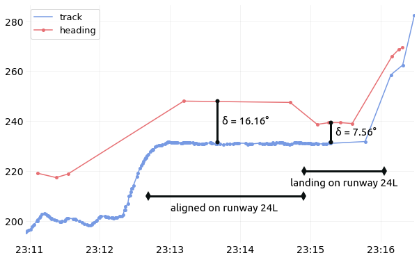

Geomagnetic declination
Warning
The following code snippets including experimental features which are not available in the library at the time of the writing, but may appear in a near future.
The following situation refers to a flight I boarded, bound for Kansai airport, Japan (RJBB). The flight encountered reasonable cross wind during final approach. The regular behaviour then is to perform a crab approach, then to remove the crab angle during the touchdown.
Let’s have a look at the data. The following simply plots a map of the last minutes of flight, together with a reconstructed windfield. (code below)
Together with timestamps corresponding to the catching of the ILS signal and of the landing, we can plot both track and heading angles of the aircraft. Both angles, together with ground and true air speed measures help construct windfields in general.
Note
See Flight.compute_wind() and Flight.plot_wind().
{kind=link}
Here, since we have very few measurements points for the heading angle, we did not resample the trajectories prior to treatments. Let’s observe the granular data as decoded onboard (code below)
{kind=link}
There are, for sure, few points requested with heading angles. Yet we can clearly see that:
the differences between the two angles (about 16°) when the aircraft is aligned on the ILS reflects the crab approach;
the moment when the aircraft removes the crab angle appears clearly after landing, yet it is not going down to zero (about 7.5°).
Warning
The explanation lies in a subtle nuance in the Mode S specifications:
ADS-B broadcasts a true track angle (i.e. with respect to the geographical North)
BDS 5,0 replies with a magnetic heading (i.e. with respect to the magnetic North)
Looking at the World Magnetic Model for the declination map, the resulting 7.5° looks conformal to the model!
# Select the first segment aligned on any ILS for RJBB
ils = flight.aligned_on_ils("RJBB").next()
# Select the most reasonable runway used for landing or take-off.
rwy = flight.on_runway("RJBB")
from traffic.data import airports, navaids
from cartes.crs import Mercator
from cartes.utils.features import countries, rivers
from traffic.visualize import countries, location
from traffic.visualize.markers import rotate_marker, aircraft
with plt.style.context("traffic"):
fig, ax = plt.subplots(subplot_kw=dict(projection=Mercator()))
airports["RJBB"].plot(ax, edgecolor="#0e1111", linewidth=0.4, alpha=0.9)
flight.plot(ax, lw=1.5)
# The segment aligned on ILS in one color
x, *_ = ils.plot(ax, lw=2.5, color="crimson")
ils.at_ratio(0.6).plot(
ax,
s=700,
color=x.get_color(),
marker=rotate_marker(aircraft, ils.at_ratio(0.6).heading),
text_kw=dict(s=" aligned on 24L", fontname="Ubuntu", fontsize=14),
)
# The segment when the aircraft is on the runway in another color
x, *_ = rwy.plot(ax, lw=2.5, color="green")
rwy.at_ratio(0.6).plot(
ax,
s=500,
marker=rotate_marker(aircraft, rwy.at_ratio(0.6).heading - 7.56),
color=x.get_color(),
text_kw=dict(s=" landed on 24L", fontname="Ubuntu", fontsize=14),
)
(
flight # .assign(heading=lambda df: df.heading - 7.56)
.resample("1s")
.compute_wind()
.query("altitude > 500")
.plot_wind(
ax, resolution=dict(latitude=15, longitude=15), alpha=0.5, color="#0e1111",
)
)
ax.set_extent((135.2, 135.4, 34.4, 34.62))
ax.spines['geo'].set_visible(False)
from matplotlib.dates import DateFormatter
center_15 = dict(fontname="Ubuntu", fontsize=15, horizontalalignment="center")
marker_style = dict(color="#0b1111", linewidth=3, marker="o", markersize=6)
with plt.style.context("traffic"):
fig, ax = plt.subplots(figsize=(10, 7))
flight.plot_time(ax, ["track", "heading"], marker=".")
# Annotate the different phases of landing
ax.plot([ils.start, ils.stop], [210, 210], color="#0b1111", linewidth=3, marker="d")
ax.text(ils.start + ils.duration / 2, 204, "aligned on runway 24L", **center_15)
ax.plot([rwy.start, rwy.stop], [220, 220], color="#0b1111", linewidth=3, marker="d")
ax.text(rwy.start + rwy.duration / 2, 214, "landing on runway 24L", **center_15)
# Annotate the differences
ax.plot(
[ils.start + ils.duration / 2, ils.start + ils.duration / 2,],
[ils.max("heading"), ils.max("track")], **marker_style
)
ax.plot(
[rwy.start + rwy.duration / 3, rwy.start + rwy.duration / 3,],
[rwy.max("heading"), rwy.max("track")], **marker_style
)
ax.text(
ils.start + ils.duration / 2,
(ils.max("heading") + ils.max("track")) / 2,
f" δ = {ils.max('heading') - ils.max('track'):.2f}°",
horizontalalignment="left", **center_15
)
ax.text(
rwy.start + rwy.duration / 3,
(rwy.max("heading") + rwy.max("track")) / 2,
f" δ = {rwy.max('heading') - rwy.max('track'):.2f}°",
horizontalalignment="left", **center_15
)
# Simplify the formatting for dates on the x-axis
ax.xaxis.set_major_formatter(DateFormatter("%H:%M"))
fig.autofmt_xdate(rotation=0, ha="center")